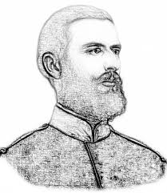
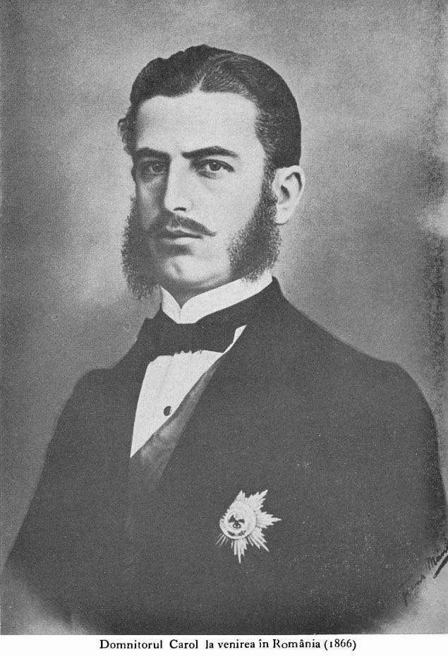
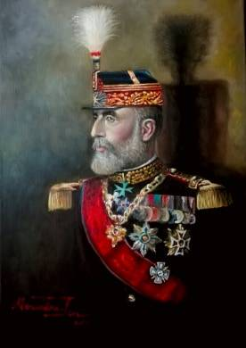

În 1868, tensiunile dintre Carol I și guvernul liberal radical au dus la retragerea acestuia din urmă de la putere. Divergențele principale au fost legate de reorganizarea armatei și dezvoltarea infrastructurii feroviare, pe care radicalii le considerau amenințări la adresa influenței lor politice.
Relația lui Carol I cu liberalii și conservatorii a fost marcată de conflicte. În 1870, confruntat cu o opoziție puternică, domnitorul a luat în considerare abdicarea. Într-o scrisoare anonimă publicată în ianuarie 1871, el critica tendința liberalilor de a aplica fără discernământ idei politice occidentale în România.
În 22 martie 1871, Carol a înlocuit guvernul liberal cu unul conservator, condus de Lascăr Catargiu. Această schimbare a adus stabilitate politică și i-a întărit încrederea în domnia sa.
În 1888 și 1907, țăranii români s-au revoltat împotriva condițiilor grele de muncă și a lipsei de pământ. Răscoala din 1907, pornită în nordul Moldovei, s-a răspândit rapid și a fost reprimată violent de armată, cu mii de victime.
Carol I a promis reforme agrare în timpul revoltelor, însă acestea nu au fost implementate imediat. Această situație a contribuit la creșterea sentimentelor republicane în România.
În 1913, România a participat la Al Doilea Război Balcanic, iar prin tratatul de pace de la București, Bulgaria a fost obligată să cedeze Dobrogea de Sud. Aceasta a fost una dintre cele mai mari realizări teritoriale ale domniei lui Carol I.
În 1870, Candiano Popescu a încercat să răstoarne domnia lui Carol I printr-o revoltă organizată în mai multe orașe. Așa-numita „Republică de la Ploiești” a fost rapid înăbușită, iar Popescu, deși inițial condamnat, a fost grațiat și ulterior a luptat pentru independența României.
Regele a jucat un rol activ în consolidarea și promovarea culturii și educației. A vizitat expoziții de artă în orașe occidentale precum Viena și München. Pe plan intern, a susținut financiar Fundația Universitară „Carol I”. De asemenea, împreună cu scriitoarea germană Mite Kremnitz, a redactat și publicat propriile memorii.
Centru de Informare
Contact: Colegiul Național Mihai Viteazul Slobozia
Telefon: 0788455534
E-mail: cnmv.slob@cnmvslobozia.ro